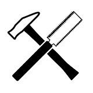
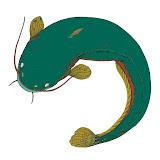

1 | Channel Name | Genre | Description | Picture | Example Video |
|---|---|---|---|---|---|
2 | フェルミ研究所 FermiLab | Miscellaneous | They add voice over manga panels and make a video out of it. I'm not sure but I think the series that they do videos on are their own mangas. | 【漫画】正直ダサいと思っていること【あるある/マンガ動画】 | |
3 | Squat Senpai | Lifting/Fitness | Japanese Olympic Weightlifter makes a lot of content breaking down lifts and videos on his training. | 220kg 20RM SQUAT HELL 【Back Squat 330KGへの挑戦 強化5日目】 | |
4 | ボンボンアカデミー | Kids | YouTube channel for kids with video topics ranging from kids songs, to different types of trains, to biology, to animations based on folk tales. | 桃太郎 -ももたろう（日本語版）アニメ日本の昔ばなし／日本語学習／PEACH BOY - MOMOTARO (JAPANESE) | |
5 | bakibakiDT | Talking Head/Reactions | Makes really fun videos, that are often centered around otaku culture and videos of him reacting to things. | 【バキバキ童貞】日本中にDTがバレた男に全てを語ってもらいました【本人】 | |
6 | 木下ゆうか | Food | Normal cooking videos you find on YouTube with cute commentary and English subs. She tries so many different things. | 【大食い】カレーに不二家ピーチネクターを入れると美味しくなるらしいので検証！カレーライス12人前【木下ゆうか】 | |
7 | futtei | Gaming | Primarily makes minecraft videos but also geoguessr and other games. | .jpg) | 【マイクラ】もしもマイクラの世界が共産主義社会だったら | マルクスクラフト Part1 |
8 | inakamon | DIY | Bought some house in the inaka and records vlogs of him repairing it with commentary over it. | 【ルームツアー】築年数不明シロアリ被害あり（6部屋＋物置3つ）| 空き家バンクで買った家1 | |
9 | キヨ。 | Gaming | Super funny guy that's popular due to his edited lets plays. His breath of the wild one is his most popular. | ゲーム史上最高傑作と名高い神ゲー『 ゼルダの伝説 ティアーズ オブ ザ キングダム 』#1 | |
10 | azochannel | VLOG | Small vlogger that just randomly talks to the camera, talks very fast sometimes. | 就活を切り捨てた女子大生の、最高の人生 | |
11 | masanlive | Visual Novels | Talks about visual novels! | 2019年のノベルゲーム TOP5【新時代】 | |
12 | kotolabo | Linguistics | Short-ish video essays on linguistics. | .jpg) | 悪口の言語学 |
13 | ２次ラブコメ紹介所／にじあに | Anime | Videos talking about romcom anime. | 【ラブコメ】令和No.1ラブコメサブヒロインランキング！結果発表！アニメおすすめ紹介！【2次元ラブコメ紹介所/にじあに】 | |
14 | TAMY Climbing Channel | Fitness | Videos on sports/climbing. | .jpg) | 【日本記録更新🚀】激闘のスピードジャパンカップ🔥🔥 |
15 | 社会部部長 | History/Politics | Very high quality videos on geopolitics and history. | 夜の衛星写真から見える世界 | |
16 | ヒカル | Miscellaneous | All sorts of entertaing videos. Very good channel if you're coming from English youtube. Has full subtitles for almost every video, but he speaks really fast and contracts a lot (っす etc). | .jpg) | お菓子とコーラだけで9万円請求？ぼったくりバーに潜入調査したら闇深すぎたから会話全て公開します |
17 | ひもの | Art/Rigging | VTuber who rigs 2D models. | .jpg) | 【保存版！】プロが高可動域Live2Dモデルの作り方を1から教えます！【①ラフ・線画・パーツ分け編】#乾物ひもの |
18 | マサル | Fishing/Survival | Guy fishes for weird sea creatures and eats them. He also has a playlist of survival on foraged/fished food, so if Bear Grylls style is your jam, this is your go-to. | 【10日間ガチサバイバル】断崖絶壁の海岸に挑戦。 | |
19 | むいむい | Foreigner in Japan/Language Learning | Chinese woman who got really, really good at Japanese through immersion. | 外国人が思う「この日本語、発音し難い！」に日本人は共感できる？？ | |
20 | さきぃ | VLOG | Daily vlogs, short and fun and no hard subs. Her editing is also pretty funny so nice videos to wind down with. | 毎日メイク！辛い事も人生においてデフォルトよ | |
21 | ラーバーガール | Skits/Conte | Two-man conte group, everyday situations as skits. | ラバーガール・・・「別れさせ屋」／『ラバーガール ソロライブ「キャット」』より | |
22 | Fischer's | Miscellaneous | One of Japan's most popular YouTube channels. It's a group channel with 6 members which probably influenced most of the main trends on Japanese YouTube today, for example hard subtitles and sound effects. As you watch more of their channel, you will grow to learn all the members and probably like most of their videos. They do lots of variety. | .jpg) | 【第１回】アラームをつくれ！ジリリリリリ王で神曲がうまれて大爆笑したwww |
23 | SAWAYAN | Miscellaneous | Two Ukranians born and raised in Japan. They are Japanese and Russian natives but all of their videos are done in Japanese. They also do lots of variety content like Fischer's and can sometimes be childish but it's just light hearted fun. They like doing lots of pranks on each other. | 【突撃】減量を頑張っているヤンの目の前で朝からマック爆食いしてみたw w w | |
24 | おろちんゆー | Fishing/Forestry | He has plenty of inside jokes and makes lots of videos with a friend called ペインさかいくん and they have hilarious chemistry. He fishes and eats bugs pretty much, while taking lots of inspiration from orochimaru from naruto, mainly in the form of his voice. Can't recommend to people who find bugs disgusting though. If you get invested like me, check out the second channel おろちんゆーの素揚げ. | ドでかい虹鱒が美味すぎる | |
25 | えばそん | Skits | Canadian guy raised in Japan, he is a Japanese native. He makes high effort skits with editing and scripts, where he asks his viewers for input. You'll see the comments from his viewers in the videos. | .jpg) | 【大喜利】こんなかき氷は嫌だ |
26 | ANTI BCSC | Moto/VLOG | Group of 5 dudes who go around on motorcycles. Their content is very funny as they crack jokes the entire time, and it's great seeing the Japanese scenery. They're from Okayama so they speak Kansai-ben, but they tone it down for the videos so it's not really that strong. | 【イッキ見】下ネタ禁止‼︎敗者は罰ゲームの愛媛大洲総集編 | |
27 | グロディーTV | Growing up in Japan | Guy born in the DRC in Africa, moved to Belgium for a few years, then raised in Japan. He is a Japanese native. He goes around at night in Shibuya and interviews people, leading to some really funny moments. | 外国人が深夜の渋谷で女子に個人的ニュース聞いたらエグすぎたwwwww | |
28 | ジョシュアinロンドン☆ | Growing up in Japan | Joshua is a really interesting case because he's white and was raised in Japan, but both of his parents are also white and were raised in Japan. So he's a second generation white japanese guy. Anyways, he interviews other nihonsodachi people. Great to get perspective on what it is like for them. | 日本育ちのドイツ人が想像以上に日本人ギャルで度肝を抜かれた！@christina_726 | |
29 | QuizKnock | Quiz | Group channel made up of almost entirely 東大 graduates. I think ふくらP might be the only guy in the main cast who didn't go to 東大. Anyways, they are all basically highly studied geniuses who make interesting content. | 【スゴすぎ】山本は誰かとカブったらNG！ムズすぎる漢字バトル | |
30 | SAWAYAN GAMES | Gaming | SAWAYAN CHANNEL's second channel. Mainly ran by Sawa (the older brother) but has Yan at times as well as other guests. Sometimes kinda boring, sometimes absolutely hilarious. He mainly plays Mario Kart 8DX with some other games occasionally. | 【東欧のもこう】ヤバすぎ：電気の出力を間違えて意識飛びました。【マリオカート8DX】 | |
31 | はじめしゃちょー | Miscellaneous | One of Japan's biggest youtubers. Personally I only watch him occasionally, but I like him a lot more than ヒカキン who is Japan's other main giant. Some of his videos are pretty funny/interesting. | ３億円の豪邸で100人とかくれんぼしてみたwwwww | |
32 | じぶん流DIYちゃんねる | DIY | Guy fixing up an akiya to retire in 10 years later in Ibaraki, Japan. The house renovation is really interesting. The only downside is all of the videos are subtitles with music and there is no voiceover, but if you can get over this I'd still recommend it. | 【ぼろ平屋DIY】#1 ルームツアー 激安ずたぼろ平屋内部公開 | |
33 | レイユール | Chemistry/Cooking | This guy is a legitimate Organic Chemist who makes food perfectly using chemistry. Pretty interesting. All the stuff he makes looks delicious. | .jpg) | 有機化学者がクレープ作ってみた |
34 | しゅうゲームズ | Gaming | Guy who plays lots of nintendo games. His Wii Sports videos are especially great. He has lots of inside jokes and is entertaining. | ヘイリーおばさんが強すぎた 裏闘技場 wii スポーツ ボクシング | |
35 | ヘルスカ | Miscellaneous | Finnish guy who makes high quality videos on various topics with lots of editing. He is not a Japanese native, but he is still at a pretty high level and it's worth immersing in. My favorite videos from him are the ones where he humorously changes/creates new kana and kanji in Japanese. | 外国人が漢字を直してみた | |
36 | |||||
37 | |||||
38 | |||||
39 | |||||
40 | |||||
41 | |||||
42 | |||||
43 | |||||
44 | |||||
45 | |||||
46 | |||||
47 | |||||
48 | |||||
49 | |||||
50 | |||||
51 | |||||
52 | 瀬戸弘司のゲーム実況 / Koji Seto Games | Gaming | Plays popular games on Youtube. Famous for his Minecraft let's play but his channel has many other games. | 【瀬戸のマインクラフト】#0 今日からPC版はじめます！まずは基本操作から！ | |
53 | 兄者弟者 | Gaming | Focuses on 実況. Speaks very clearly which makes it easier than other similar channels. | .jpg) | 【VR実況】弟者,兄者,おついちの「Job Simulator」【2BRO.】 |
54 | ジュキヤ/Jukiya | Street interviews | This was what Konbini Confessions was based on. Interviews in shibuya with people from different age groups. | カップル達に年越しの瞬間何してました？と聞いてみたら回答がやばすぎたwwwww | |
55 | ジョーブログ【CRAZY CHALLENGER】 | Traveling | Amazing channel if you wanna learn about the history of various places in Japan. He goes to several 廃墟 and currently lives in the most "dangerous" place in Japan - Nishinari. | 【日本最大のタブー】京都駅徒歩5分の被差別部落「崇仁地区」の現状 | |
56 | じゅん | Gaming/雑談 | Let's plays and random variety content. Also has some 雑談, all extremely funny (and loud). | 結局マグマと水どっちがいいの？ ☆水とマグマのアスレチック☆ | |
57 | HikakinTV | VLOG | Hikakin is the most popular YouTuber in Japan. He has been making videos for over a decade, usually VLOG type videos with silly humor. | 20億円のヒカキン新居ハウスツアー！超巨大室内温水プール&庭付きの家 | |
58 | 加藤純一ロードショー【総集編&MAD】 | Gaming | This channel contains "digests" of much longer let's plays from 加藤純一's main channel. | 加藤純一の金ネジキ最終回ダイジェスト【2021/11/15】 | |
59 | 1人前食堂 | Cooking | A lady cooks for herself in cozy home kitchen while monologuing on her current life, scripted and film-like quality. | 3品のジブリなディナー【ラピュタ/魔女宅/猫の恩返し】【ジブリ飯】 | |
60 | NewsPicks /ニューズピックス | Miscellaneous/News | Collection of short debates between experts on various current affairs, with great editing and graphics. Naturally, this is quite a bit harder than your average YouTube channel, but it is very interesting. | 【株価暴落】ChatGPTで教育市場がズタボロに？本当に生き残るAI教材、塾はここ。エドテック経営者が本音解説(解説:讃井康智) | |
61 | Japanese Traveler SHIGE | Travel | Middle-aged man travels the world and gives comprehensive experience of a place, its food and attractions in 20 minute videos. | .jpg) | ロンドン33歳ひとり旅🇬🇧鉄道ストライキに負けずパブ6軒はしご酒とフィッシュ＆チップス【ヨーロッパ#2】2022年6月20日〜23日 |
62 | エレガント人生チャンネル | Skits | A man and a woman (friends or couple?) doing homemade comedy skits, pretty funny. | 『いずれ黒歴史になりそうな発言をする人たち』TikTokまとめ | |
63 | HOTEL DE MIKUNI | Cooking | Retired chef cooks in his restaurant, shows how to make dishes or simply enjoys life eating out or meeting his friends and family. | #336『カフェドパリバター』ミディアムレアなステーキの焼き方も！｜シェフ三國の簡単レシピ | |
64 | フェルミ漫画大学 | Miscellaneous | Manga-like videos summarising lots of different culture/society essays, and self help books. Cute visuals and dialogues to keep it entertaining and informative. The reader speaks very fast so it's a bit hard but well worth it. | 【漫画】メンタルが落ちた時の対処法【マンガ動画】 | |
65 | マリマリマリー | Skits | Short animated comedy skits with super cute pop visuals with real and unscripted sounding voices. The readers speak very fast with a lot of slang and they tend to eat their words quite a bit. Turning on subs is highly recommended. | .jpg) | 体力テスト一夜漬けしてきた【アニメコント】 |
66 | 桐崎栄二.きりざきえいじ | Miscellaneous | Various small videos on wildly different topics, usually very funny or centering on one stupid idea. Often collaborates with his little sister. | 【喧嘩】知らない高校のLINEグループに侵入したら... | |
67 | parako - 私立パラの丸高校 | Skits | Short comedy animated skits about high school students with paranormal abilities. Sometimes the episodes are connected to some kind of plot or arc. Nice visuals and funny humor. | しれっとすげぇこと言ってるギャルの会話【アニメコント】 #パラ高 | |
68 | SDGs media | Sustainability | Informative videos about SDGs, environmental policies and how to be more sustainable in business and daily life. | 【17の目標】SDGsが目指す17ゴールを学ぼう | |
69 | 悪いが今は青春中 | Skits | Tiktok shorts and YouTube collections of high school slice of life skits, with very soft, natural sounding 青春 romance. | お互いヤキモチを妬いてムキになったあの頃の青春【青春あるある】 | |
70 | マサキ/Masaki Books | Reading | An avid bookworm makes reviews of what he read without spoilers. Cozy atmosphere and passionate opinions. | 【予測不可能】ラストが凄すぎる！どんでん返しミステリー小説５選 | |
71 | 李姉妹ch | Growing up in Japan | Chinese sisters that mostly grew up in Japan, variety of content but usually related to their upbringing. | .jpg) | 中国人が日本に来て驚くこと！意外なあれにびっくり【雑談】 |
72 | けんたさん | Cycling/VLOG | Videos on cycling, reviews of products, his new bikes, shows planning that goes into some rides, traveling with bikes. Also does shorts. | ロードバイクで3泊4日の北海道旅、これで行ってくるわ！ | |
73 | まさ / 高倉正善 | Cycling/Miscellaneous | Longer videos, some less serious and focused on fun ideas instead. | .jpg) | 【神回】ロードバイク女子になればいいねいっぱい貰えるのか！？ |
74 | ゆる言語学ラジオ | Linguistics | Linguistics and computer science students hang out and talk about some aspects of language. Sometimes with guests. | 【10年後の受験生へ】ターゲット1900の全語源解説（7単語だけで1時間）【ターゲット1900①】#103 | |
75 | ゆるコンピュータ科学ラジオ | Computer Science | Same as above but the other way around. Computer science student talks about it to a linguistics student. | コンピュータ科学をやるのに、コンピュータは不要【アルゴリズム1】#1 | |
76 | 文学YouTuberベル | Reading | Generic books content, videos on single books or reading in general. | 私が本に付箋を貼る理由をお話しします | |
77 | Kevin's English Room / 掛山ケビ志郎 | Miscellaneous | Three friends from uni that make content surrounding the English language and American culture. | アメリカの法を犯してしまいました。罪を償います | |
78 | Nolie France / のりふら | VLOG | Japanese mother raising her half kids with her French husband in france. Videos on food, general life, France from the perspective of a Japanese person. | 子連れキャンプ2泊3日&自転車旅100キロの記録、初夏のロワール川🇫🇷 | |
79 | 杏/anne TOKYO | Cooking/Travel | Lots of cooking videos in the past, now focused more on travel, occasionally music, books and so on. | .jpg) | 【Japanese traditional food】我が家のお正月料理をご紹介します！ |
80 | Bappa Shota | Travel | Japanese dude travelling all over the world. Some videos aren't fully in Japanese as a result. | ロサンゼルスのストリートギャングから唯一認められた日本人を訪れてみた | |
81 | Ruriko_675 | Travel/VLOG | Goes around Japan on her motorcycle to interesting places and shows what she is eating/where she is staying. Really easy to follow and mostly hardsubbed. One of the first channels I could confidently watch as a beginner. | 前回のルートを辿っていく、高知旅編｜hayabusa gsx1300r【モトブログ】 | |
82 | 週末ビフォーアフター | Entertainment | A show about cleaning up messy homes. It really shows you how people live and what kinda stuff normal people have and how much of it. | #118【里帰り出産できない家①】リビングに母の物9割 出産間近の娘が大激怒な片付けﾚｼﾋﾟ | |
83 | 大工の正やん | Building | Carpenter building houses, start to finish. There are 2 types of video on this channel; Vlogs every other week with alot of detail and the a compilation highlight video. where you see the house finished in half an hour. |  | 【Season4総集編】五ヶ月間の大工仕事が詰まった家 ~ 高気密で高断熱の軸組工法 ~ |
84 | ミミックチャンネル | Cooking/Comedy | Makes comfy and funny video about food and camping. | 【ソロキャン】肉の自販機！？珍しい自販機のあるキャンプ場で初ソロキャン！ | |
85 | Gens | Cooking | This channel got famous recreating popular brands and fast food really meticulously. Now he makes infotainment cooking video where he goes more into the history and circumstances of the food. Also really likes Tacos lots of Taco videos. | 君たちは凶器になりうるタコスを知っているか~Birria Tacos~ | |
86 | Kurashiru | Cooking | Kurashiru is a recipe site/app and they invite cooks to show of dishes. There is alot of variety of cooks and food on this channel, more than any other cooking channel I know. | 【お肉に愛を注ぎます】名店フレンチシェフの究極のステーキの焼き方｜クラシル #シェフのレシピ帖【LA BONNE TABLE 中村和成】 | |
87 | runtime[Car camping] | Travel/VLOG | Guy remodelled a car into a camper, where he sleeps and eats, and vlogs about his experiences along the way. | 一晩で50cm!?豪雪地帯の白川郷で一夜を過ごす雪中車中泊 | |
88 | homosapi | Cooking | Kinda deranged cooking channel trying to cook and eat wildlife and plants. Marine creatures are the more normal stuff he gets his hands on. |  | エイを丸ごとプレスしてせんべい作る【ENG SUB】 |
89 | George ジョージ | Cooking | This channel just makes the best food porn. Very aesthetic shots, with friendly commentary. | 【日本人の３倍芋を食べる】じゃがいも大国フランスの伝統料理『ガレット』をお見せします | |
90 | 勘違いくん | Comedy | Skits about lewd misunderstandings. | エッチな質問責めにあった女子大生【アニメ】 | |
91 | 国立国語研究所 [NINJAL] | Linguistics | The official channel of the National Institute for Japanese Language and Linguistics. Has various lectures and forums that are aimed at research and studying. | 講義「言語学入門（前編）」（柴谷方良）／言語学レクチャーシリーズVol.14 | |
92 | 西美濃八十八人衆 | Gaming | Very laid-back gameplay videos featuring two friends. Spiritual successor of a previous ニコニコ動画 channel. | 【ゲーム発展国++】◆30代 はじめての大手ゲームメーカー経営◆part1 | |
93 | ゴロー/イラストで学ぶ体の仕組み | Biology | A channel explaining human biology in Japanese with illustrations. | 細胞の構造と機能（細胞小器官まとめ） |